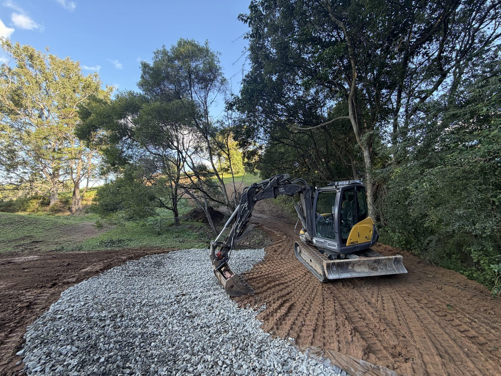
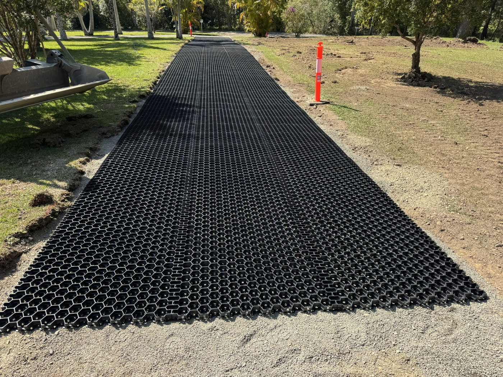
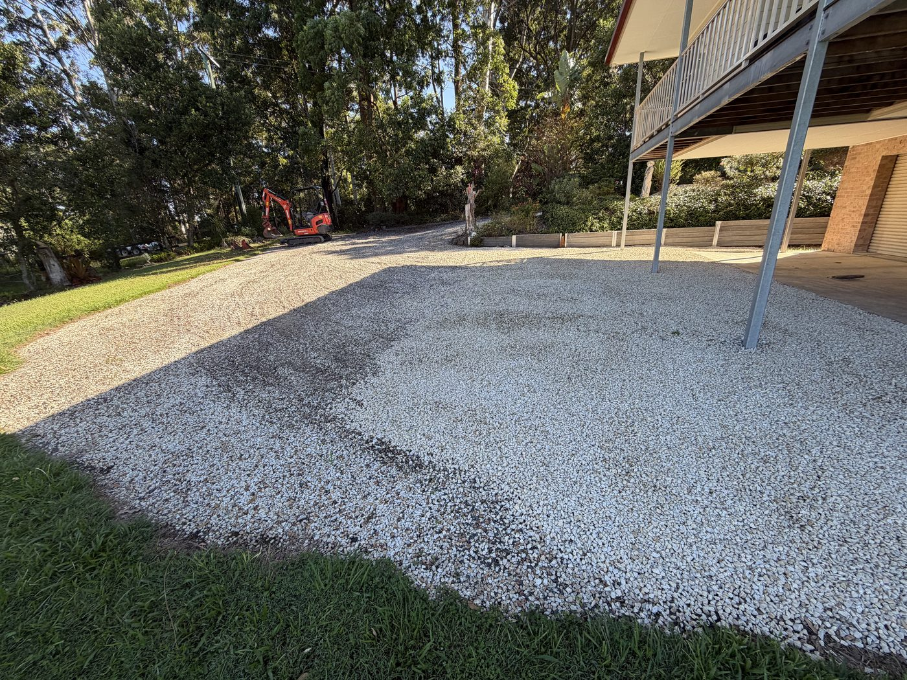

New gravel driveways and rural access roads across Coffs Harbour, Sawtell, Boambee and the Bellingen Shire — formed, gravelled, graded and drained so you can get in and out whatever the weather.
A driveway is only as good as what's underneath it. Dump gravel on soft ground with nowhere for water to go and it'll rut, pot-hole and wash out by the next big rain. We build them properly:
Because BFEx runs the excavator, the tipper and does the clearing, one team handles the whole job — clear the line, form the base, cart the gravel, grade it off. One number, one invoice.
A curving driveway build on Yarraman Road, Sawtell, and gravel access work on Old Coast Road and Tuckers Rock Road, Bellingen. Real driveways on real Coffs Coast ground.



Based at Bonville, right between Coffs and Sawtell — so we're local to most of the jobs, not driving in from out of area.
Rural and semi-rural driveways around Boambee, North Boambee, Coramba Road and the valleys — including the steep and awkward ones.
Driveways, crossovers and drainage on the flatter coastal blocks, plus repair and re-grade of existing runs.
Home turf. New access, regrades and drainage — often same-week mobilisation.
Longer rural access roads and property entrances through the Bellingen Shire and river flats.
It comes down to length, ground conditions, how much drainage it needs and how much gravel to cart in. We quote per job after a look — send the address and a couple of photos and we'll give you an honest number.
Often, yes. If the base is sound we can re-shape, top up the gravel, sort the drainage and grade it back to new. If it's failing underneath, we'll tell you straight rather than paper over it.
That's a lot of what we do here. With the excavator we can cut, batter and retain the tricky sections and get the drainage right so a steep run doesn't wash out.
Yes — we cart in road base, gravel and rock with our own tipper, so it's all handled in the one job.